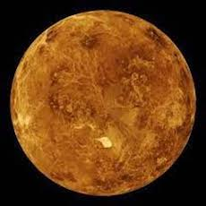
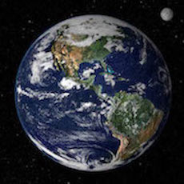

Mercury
- Almost no atmosphere: it's too hot and its gravity too low to retain one
- Three months of sunlight (equivalent to our daytime), with temperatures up to 430°C
- Three months of darkness (nighttime), with temperatures down to -170°C
- Morning micrometeor showers that make a big impact on the thin atmosphere
Learn more

Venus
- A perpetual thick cloud cover
- Atmosphere: mainly carbon dioxide (97%) and nitrogen
- Its day is 243 Earth days long, and longer than its year!
- Average surface temperature: 460°C
- Sulphuric acid rain evaporates before reaching the surface
Learn more

Earth
- Atmosphere: mainly nitrogen (78%) and oxygen (21%)
- Surface temperature range: 60°C - 90°C, appropriate for liquid water to exist on the surface
- Average wind speed: 19km/h
- It rains water ☺
Learn more
Mars
- Atmosphere: mainly carbon dioxide (95%) and nitrogen (3%)
- Surface temperature range: 20°C - 140°C, as its thin atmosphere provides little insulation
- Surface water can only be a solid or a gas due to pressure and temperature
- Intense dust storms that can cover the entire planet
- 'Dust devils': whirldwinds up to 6km high
- It snows frozen carbon dioxide
Learn more
Jupiter
- A turbulent atmosphere, mainly by hydrogen (86%) and helium (13%)
- No solid surface, the atmosphere gradually thickens to liquid hydrogen
- 3 layers of clouds with different chemicals
- Average temperature at cloudtops: -108°C
- Some storms, like the Great Red Spot, persist for years
- Winds can exceed 500km/h (note that 117km/h on Earth is considered a hurricane)
Learn more
Saturn
- A turbulent atmosphere formed mainly by hydrogen (96%) and helium (3%)
- No solid surface
- 3 layers of clouds with different chemicals
- Average temperature at cloudtops: -180°C
- Wind speeds approach 1800 km/h
- It rains helium droplets
Learn more
Uranus
- Atmosphere: mainly hydrogen (83%), helium (15%) and methane (2%)
- No solid surface: a thin atmosphere and a liquid hydrogen and helium layer
- Average temperature at cloudtops: -218°C
- Its seasons last many years (it takes it 84 years to orbit the sun)
- Strong winds of up to 700 km/h
Learn more
Neptune
- Atmosphere: mainly hydrogen (79%), helium (18%) and methane (3%)
- No solid surface
- Average temperature at cloudtops: -218°C
- Truly immense storms
- Its clouds are thought to be made of methane ice crystals
Learn more